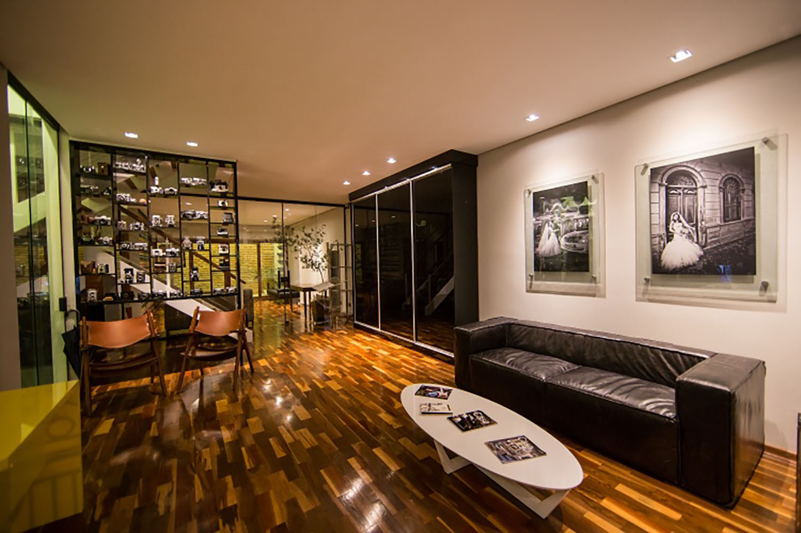

A equipe Daniela Cruz Fotografia atende em duas unidades, oferecendo conforto e comodidade aos clientes que, além de terem uma unidade mais próxima para visitar e conhecer, tem dois espaços cuidadosamente criados que funcionam como estúdio para ensaios ou galeria para a exposição das fotos de seu evento. Conheça as unidades abaixo:
ESTÚDIO JARDINS
Com 400 metros quadrados, o espaço foi especialmente projetado para recriar o glamour do dia mais especial da vida de um casal: suas bodas. O estúdio oferece um serviço único e exclusivo aos recém-casados. Uma exposição das fotos do casamento para familiares e amigos íntimos com direito a painéis gigantes e álbum das principais cenas do grande dia.
Horário de funcionamento: De 2ª à 6ª das 11:00 às 20:00. Sábado das 10:00 às 17:00
Endereço: Alameda Lorena, 1304 / Conj. 1210
ESTÚDIO MOOCA

Sede própria, inaugurada em 2015, na Rua Cuiabá, nº 345, no tradicional bairro da Mooca, com estacionamento exclusivo para clientes. Possui estúdio para ensaios, camarim, galeria permanente. O atendimento personalizado é a marca registrada de Ricardo Hara e equipe. Esse espaço conta com toda infra estrutura e moderna tecnologia necessária para finalização do álbum e filme dos eventos.
Horário de funcionamento: De 2ª à 6ª - das 10:00 as 20:00. Sábado das 10:00 às 17:00
Endereço: Rua Cuiabá, 345 - Mooca
Telefones:(11) 2081-1700
WhatsApp: (11) 94109-6936